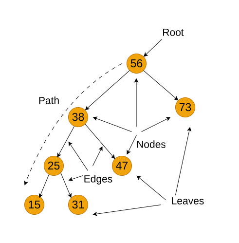

Section 3. Implementation of Basic Abstract Data Types in JavaScript
3.1. Data Structuring Features
This section delves into the practical implementation of basic Abstract Data Types (ADTs) within the JavaScript programming language. ADTs, as mathematical models with defined operators, provide a foundation for algorithm development. However, translating these conceptual models into executable code requires representing ADTs using the data types and methods available in JavaScript. We will explore how to bridge the gap between abstract data structures and their concrete JavaScript implementations, demonstrating techniques to effectively utilize JavaScript’s features to realize fundamental ADTs. This section will equip readers with the knowledge to translate theoretical ADT concepts into functional JavaScript code, laying the groundwork for more complex data structure and algorithm implementations.
In practical terms, a data structure is a collection of data structured in such a way as to ensure efficient use by users. This requires a certain ordering of data, primarily at the level of storage in computer memory. Reducing space and increasing organization in conjunction with reducing the time complexity of different tasks is the main objective of working with data structures.
Considerable experience in the development of computer technology and computing technology has made it possible to classify data structures into different categories. First, simple and integrated structures are distinguished by complexity. The criterion of simplicity is indivisibility — that is, in a computer implementation, a simple chain of bits. Simple, basic structures include variables of different types: integers, real numbers, booleans, strings.
Integrated (composite, complex) structures are data structures whose component parts are other data structures, including simple and integrated. Many basic integrated data structures are predefined by a specific programming language: arrays, slices, structures, etc. Such structures can be created by users for a specific problem, using basic integrated structures.
By way of presentation, data structures are divided into logical and physical. The logical structure is an abstract data layout that the user or programmer envisions. The physical structure is a method (schema) of specific data placement in computer memory. In general, the logical and physical structures of the same data do not coincide. In a logical (abstract) structure, data tend to be adjacent to each other, while in a computer implementation these data may be located in different memory regions.
An important feature of a data structure is the existence of links between its elements. On this basis, we distinguish disconnected and connected structures. Disconnected structures are characterized by a lack of linkages between the elements, while connected structures are characterized by linkages. Disconnected structures include arrays, strings, stacks, queues, and linked lists. In many cases, data can be characterized by variability — that is, a change in the number of elements and/or the relationships between elements of the structure. Arrays, sets, records, tables fall under the category of static data; stacks, queues, trees fall under semi-static data; linked lists and graphs fall under dynamic data.
Linear and non-linear data structures are distinguished by structural order. Linear structures are divided into structures with sequential distribution of elements in memory (vectors, strings, arrays, stacks, queues) and structures with arbitrary connected distribution of elements in memory, depending on the nature of the reciprocal arrangement of elements in memory (singly linked and doubly linked linear lists). Nonlinear structures are multi-linked lists, trees, graphs.
One of the defining features of data structures is how to access data. In the access method, a search mechanism is important — an algorithm that determines the access path possible within a given memory structure, and the number of steps along that path to find the sought data. There are two main groups of data access methods: sequential and direct.
Sequential access means that a group of elements is accessed in a predefined ordered sequence. An example of sequential access is a singly linked list. The various elements of the data structure are directly accessed by providing a unique address for these elements.
Finally, one characteristic of data structures is homogeneity. Homogeneous structures contain a set of simple data of the same type (numeric, boolean, string, etc.). Heterogeneous structures combine data of different types. Examples of homogeneous structures are arrays, slices, and stacks. Heterogeneous structures include records and sets.
The presence of a large number of data structure features has predetermined various attempts to classify them. From a programming point of view, the main features are: linearity/non-linearity, data access, and data homogeneity/heterogeneity. This section covers the JavaScript implementation of linear abstract data types such as arrays/slices, maps, linked lists, stacks, and queues.
3.2. Linear Data Structures
Linear data structures are structures in which data elements are arranged in sequence. Linear structures can be distinguished by the way the individual elements of a data collection are accessed and by the homogeneity of the data (homogeneous and heterogeneous).
3.2.1. Arrays in JavaScript
An array is a collection of data where each element is stored at a specific index. Arrays allow efficient storage and manipulation of multiple values in a single variable.
For example, the collection of integers [24, 12, 36, 6, 47, 11] forms an array (Figure 3.1).
Declaring Arrays in JavaScript
JavaScript arrays are dynamic, meaning they can grow and shrink as needed. Unlike some other languages, JavaScript allows mixing different types within an array, but best practice is to keep arrays homogeneous (storing values of the same type).
🔹 Creating Arrays
Arrays in JavaScript can be declared in different ways:
1️⃣ Using [] (Recommended) javascript
let numbers = [24, 12, 36, 6, 47, 11];
2️⃣ Using the Array Constructor javascript
let numbers = new Array(24, 12, 36, 6, 47, 11);
This method is rarely used in modern JavaScript.
🔹 Multidimensional Arrays
JavaScript supports multidimensional arrays by storing arrays inside arrays. javascript
let matrix = [ [1, 2, 3], [4, 5, 6], [7, 8, 9] ];
console.log(matrix[1][2]); // Output: 6
Here, matrix[1][2] accesses the second row, third column (6).
Summary:
Feature |
JavaScript Equivalent |
Declaring an array |
let arr = [item1, item2, …]; |
Using the Array constructor |
let arr = new Array(item1, item2, …); |
Accessing elements |
arr[index] |
Multidimensional arrays |
let matrix = [[…], […]]; |
3.2.2. Slices
A slice is a variable-length data collection that stores elements of a homogeneous type. A slice can be thought of as a "slice" of an array. Slice syntax in JavaScript is [] or [value1, value2, value3, …, valueN].
In JavaScript, slices are implemented dynamically. To create a slice (array) in JavaScript, you can use an array literal or the Array constructor. For example, creating parentSlice would look like this:
let parentSlice = new Array(20).fill(0); // Creating an array of 20 elements, filled with zerosThe length property indicates the number of elements in the slice (array). In JavaScript there is no explicit concept of "capacity". Multiple "slices" can be created from a single array using the slice() method or destructuring. For example, to create sliceA and sliceB from parentSlice:
let sliceA = parentSlice.slice(0, 4); // sliceA contains the first 5 elements
let sliceB = parentSlice.slice(12, 14); // sliceB contains 3 elements from index 12 to 14In JavaScript, sliceA will contain elements from index 0 to 4, and sliceB will contain elements from index 12 to 13.
The following functions and methods are used to work with slices (arrays) in JavaScript:
push(): Adds elements to the end of the array. If the array size is insufficient, it automatically increases.
length: Property that returns the number of elements in the array.
slice(): Creates a new array containing a "slice" of the original array.
3.2.3. Objects in JavaScript
In JavaScript, objects serve the same purpose as structures in other programming languages. They allow us to store multiple related values (properties) in a single entity. Objects in JavaScript are flexible and support various ways of creation and manipulation.
JavaScript objects are defined using curly braces {} and consist of key-value pairs.
🔹 Creating an Object with Named Properties
let employee1 = {
firstName: "Peter",
lastName: "Wolf",
age: 35,
salary: 20000
};console.log("Employee 1:", employee1);
🔹 Alternative Way: Object Constructor
Another way to create an object is by using the Object constructor.
let employee2 = new Object();
employee2.firstName = "Nick";
employee2.lastName = "Smith";
employee2.age = 49;
employee2.salary = 35000;console.log("Employee 2:", employee2);
Key Differences:
The first approach (object literal {}) is more common and recommended.
The second approach (new Object()) is used when objects need to be created dynamically.
🔹 Creating an Object with a Factory Function
A factory function is a regular function that creates and returns an object.
function createEmployee(firstName, lastName, age, salary) {
return {
firstName,
lastName,
age,
salary
};
}let emp1 = createEmployee("Peter", "Wolf", 35, 20000); let emp2 = createEmployee("Nick", "Smith", 49, 35000);
console.log("Employee 1:", emp1); console.log("Employee 2:", emp2);
Output: text
Employee 1: { firstName: 'Peter', lastName: 'Wolf', age: 35, salary: 20000 } Employee 2: { firstName: 'Nick', lastName: 'Smith', age: 49, salary: 35000 }
🔹 Adding Methods to a Factory Function
An object can contain methods (functions inside the object).
function createEmployee(firstName, lastName, age, salary) {
return {
getFullName: () => ${firstName} ${lastName},
getSalary: () => salary, // You can read salary
setSalary: (newSalary) => salary = newSalary // You can change salary
};
}let emp5 = createEmployee("Bob", "Anderson", 50, 30000);
console.log(emp5.getFullName()); // "Bob Anderson" console.log(emp5.getSalary()); // 30000
emp5.setSalary(35000); console.log(emp5.getSalary()); // 35000
Output: text
Bob Anderson 30000 35000
3.2.4. Map in JavaScript
In JavaScript, Maps are collections that store unordered key-value pairs, where each key is unique and maps to a corresponding value. Maps are particularly useful in data retrieval algorithms because they offer efficient lookups.
Unlike arrays, which use numeric indexes, Maps allow keys of any data type, making them more flexible (Figure 3.3).
In JavaScript, we use the Map object to create a map. The syntax is:
let myMap = new Map();Here, myMap is an empty Map ready to store key-value pairs.
🔹 Declaring a Map Where Keys Are Strings and Values Are Numbers
We use the .set() method:
let studentScores = new Map();studentScores.set("Alice", 95); studentScores.set("Bob", 88); studentScores.set("Charlie", 92);
console.log(studentScores);
Now, studentScores contains:
"Alice" → 95
"Bob" → 88
"Charlie" → 92
🔹 Accessing Values in a Map
To retrieve a value from a map, use .get(key):
console.log(studentScores.get("Alice")); // Output: 95
console.log(studentScores.get("Bob")); // Output: 88If the key does not exist, .get() returns undefined.
3.2.5. Linked List
A linked list is a dynamic data structure where each element, called a node, consists of two parts (Figure 3.4):

1️⃣ Data (which can be any primitive or complex data type) 2️⃣ A reference (pointer) to the next node in the list
Unlike arrays, where elements are stored in contiguous memory locations, linked lists store elements at different memory addresses and connect them via references.
They are widely used in memory management, file systems, and queue implementations.
In JavaScript, we represent a linked list node using an object.
🔹 Creating a Node
function createNode(data) {
return {
data,
next: null
};
}Each node has:
data – stores the value
next – stores the reference to the next node (initially null)
🔹 Creating a Linked List
A linked list needs:
1️⃣ A reference to the first node (head) 2️⃣ A counter (size) to track the number of elements
function createLinkedList() {
return {
head: null,
size: 0
};
}Here head points to the first node, and size stores the length of the list.
3.2.6. Stack and Queue as Data Structures
a) Stack
A stack is an abstract data type that contains elements with two basic operations: push, which adds an item to the collection, and pop, which deletes the last item added. From a technological point of view, a stack is memory where data values are loaded and retrieved according to the "last in - first out" (LIFO - Last-In-First-Out) strategy. Data enters the stack from only one side, called the top of the stack (Figure 3.5).
A stack supports two primary operations:
Push(item) – adds an element to the top of the stack
Pop() – removes the top element from the stack
From a conceptual point of view, a stack can be compared to a stack of plates: you can only remove the top plate. To access a plate further down, you must remove all plates above it.
This structure is commonly used in:
Undo (Ctrl+Z) functionality in text editors
Managing function calls in recursion (function calls are stored in a stack)
🔹 Declaring a Stack in JavaScript
JavaScript does not have a built-in stack data type, but it can be implemented using arrays, as they provide push() and pop() methods.
function createStack() {
let data = []; // Internal storage for stack elementsreturn { push(item) { data.push(item); },
pop() { if (data.length === 0) return undefined; return data.pop(); },
peek() { return data[data.length - 1]; // View the top element },
size() { return data.length; },
isEmpty() { return data.length === 0; } }; }
b) Queue
A queue is a linear data structure that follows the First-In-First-Out (FIFO) principle. This means that the first element added to the queue is the first one to be removed (Figure 3.6).
A queue supports two primary operations:
1️⃣ enqueue(item) – Adds an element to the back of the queue 2️⃣ dequeue() – Removes an element from the front of the queue
Queues are widely used in:
Task scheduling (CPU scheduling, print queue)
Breadth-First Search (BFS) algorithms
Message processing systems
3.2.7. Representation of Binary Trees in JavaScript
Binary trees as an abstract data type were discussed in Section 1. Here we will discuss the computer implementation of this type of data structure using the visual algorithmic language DRAKON and JavaScript. Before we continue, let’s review the key terms associated with binary trees (Figure 3.7).

Root: The root of the tree is the only node with no incoming edges. It is the top node in the tree.
Node: The basic element of the tree. Each node has data and two references that can point to zero or more descendants.
Edge: A fundamental part of the tree used to connect two nodes.
Path: An ordered list of nodes connected by edges.
Leaf: A leaf node is a node that has no descendants.
Tree height: The number of edges on the longest path between the root and a leaf.
Node level: The number of edges on the path from the root node to that node.
The binary tree’s information structure is set up as follows (Figure 3.8):
The declaration of the basic elements of binary trees in JavaScript is conveniently performed using a factory function:
function createNode(value) {
return {
value,
left: null,
right: null
};
}Each node has:
value – Stores the data
left – Reference to the left child (initially null)
right – Reference to the right child (initially null)
A binary tree should have:
1️⃣ A reference to the root node 2️⃣ Methods to insert values into the tree 3️⃣ Methods to traverse the tree
The structure of a binary tree in JavaScript is declared in a simplified way:
function createTreeNode(value, parent) {
return {
left: null,
right: null,
parent: parent,
value: value,
};
}Several types of binary trees are discussed in the literature, the most important of which is classification based on node values:
Binary Search Tree (BST)
AVL Tree
Red-Black Tree
Binary Search Tree (BST)
Node Structure: Each node has a value, a left child, and a right child. In JavaScript, this can be represented with objects.
Insertion: New nodes are placed based on their value relative to the current node. Smaller values go left, larger values go right.
AVL Tree
Self-Balancing: Maintains balance by ensuring the height difference between left and right subtrees of any node is at most 1.
Balancing Mechanism: Uses rotations (single and double) to restore balance after insertions or deletions.
Implementation Notes: Requires tracking node heights and implementing rotation functions.
Red-Black Tree
Self-Balancing: Uses color attributes (red or black) for nodes and follows specific rules to maintain balance.
Rules:
Root and leaves are black
Red nodes have black children
All paths from a node to its descendant leaves contain the same number of black nodes
Balancing Mechanism: Uses recoloring and rotations to restore balance after modifications.
Performance: Often faster than AVL trees for insertions and deletions.
Implementation Notes: Requires tracking node colors and implementing recoloring and rotation functions.
Algorithms implementing the basic tree manipulation functions are presented in Section 8.
3.2.8. Representation of Graphs in JavaScript
Recall that a graph G is given by a set of vertices {V} and a set of edges {E} connecting all or part of these vertices. Thus, a graph G is completely defined as {V, E}.
Types of Graphs (Figure 3.9):
1️⃣ Undirected Graph – Edges have no direction (e.g., friendships in social media) 2️⃣ Directed Graph (Digraph) – Edges have direction (e.g., roads, dependencies)
🔹 Graph Representation in JavaScript
A graph can be represented using an adjacency list, where:
Each node (vertex) stores a list of neighbors
Directed graphs store one-way connections
Undirected graphs store two-way connections
🔹 Creating a Graph in JavaScript
We will use a factory function to create a graph.
function createGraph(isDirected = false) {
let adjacencyList = new Map();function addVertex(vertex) { // adds a new node if (!adjacencyList.has(vertex)) { adjacencyList.set(vertex, []); } }
function addEdge(vertex1, vertex2) { // connects two nodes if (!adjacencyList.has(vertex1)) { addVertex(vertex1); } if (!adjacencyList.has(vertex2)) { addVertex(vertex2); } adjacencyList.get(vertex1).push(vertex2);
if (!isDirected) { adjacencyList.get(vertex2).push(vertex1); } }
function getAdjacencyList() { // returns the full graph structure return adjacencyList; }
return { addVertex, addEdge, getAdjacencyList }; }
Algorithms implementing basic graph manipulation functions are presented in Section 9.